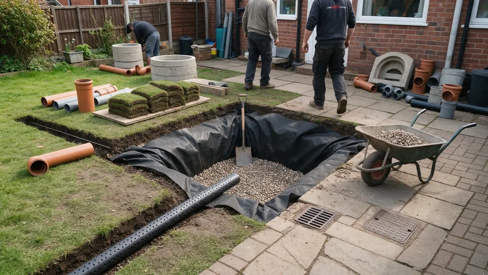
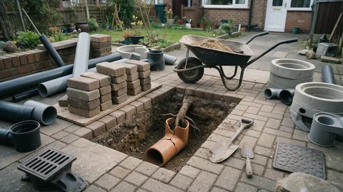

What a soakaway does
A soakaway is a pit filled with clean washed stone, wrapped in a membrane so the soil cannot silt it up, that takes water from the roof or the ground and lets it soak away. Land drainage is the perforated pipe that collects water from a wet lawn and feeds it there.
Why they fail
Three reasons, usually. They were dug too small for the roof area feeding them, so they fill faster than they empty. They were dug without a membrane, so twenty years of fine soil has washed into the stone and filled every gap. Or the ground they were dug into will not take water at any useful rate, which is heavy clay for most of this part of the world.
None of those get better on their own, and all three look identical from the surface: standing water, a soggy patch that never dries, or a downpipe backing up in heavy rain.
The test hole
Before we price anything we dig a hole, fill it with water and time how fast it goes. That is the number everything else is sized from. Heavy clay takes water slowly and needs a bigger pit, or sometimes needs a different answer altogether. Sandy ground, which is a lot of the coast round here, takes it quickly and needs less.
Anybody quoting a soakaway without digging a test hole is pricing a hole in the ground and hoping.
Where it has to go
Away from the house, away from the neighbour's boundary and away from anything with foundations, because the point of the thing is to put water into the ground and you do not want that happening under a wall. There are published minimum distances for this and we work to them. If your garden has nowhere that satisfies them, we will tell you that instead of building it anyway.

Generated photoGenerated for this demo. Not a photograph of a real job.
On the day
How this one usually goes.
- Look at where the water comes fromRoof area, which downpipes feed what, and whether the wet patch is rain off the house or ground water sitting in clay.
- Dig a test hole and time itFill it, time how fast it drops. Everything else is sized off that number, and it is the step that gets skipped.
- Size the pit for the ground, not the roofSlow ground needs a bigger pit. Fast ground needs less. The roof area is only half of the sum.
- Dig, line with membrane, fill with clean stoneThe membrane is what stops soil washing into the stone and filling it in over the years.
- Pipe it in, backfill and put the lawn backPerforated pipe laid to a fall, turf lifted on boards and put back, and the ground left level rather than lumpy.
A sample running order for this demo. Yours depends on what is under the covers.
Questions
Asked about this job.
My lawn is a swamp every winter. Is that a soakaway job?
Sometimes, and sometimes it is land drainage, and sometimes it is neither.
If the wet patch sits under a downpipe or next to the house, it is usually rainwater that has nowhere to go. If the whole lawn goes soft in winter and dries out in summer, that is ground water sitting in clay and the answer is a run of perforated pipe collecting it and taking it to somewhere that will accept it. We dig the test hole first either way, because it decides which of those is worth doing.
Can a soakaway be rebuilt, or does it need moving?
Often rebuilt, in the same place, properly, with a membrane and the right volume. An old soakaway that was dug small and unlined is doing the best it can.
It needs moving when it is too near the house or a boundary, or when the ground in that corner simply will not take water. The test hole tells us which.
How far from the house does it have to be?
There are published minimum distances from buildings and boundaries, and we work to them rather than to what fits. The point of a soakaway is to put water into the ground, and under a wall is the last place you want that.
If a garden has nowhere that meets them, we will say so. We are not going to build one against the wall because there was room.
Do you do the gutters and downpipes as well?
The outlet end, yes. Clearing the gully at the bottom of a downpipe, flushing the run through and sorting out where it discharges is our work and it is often what is actually wrong.
Gutters themselves we clear where we can reach them safely from the ground or a short ladder. Anything high or awkward and you want a roofline firm with the right access.
General trade knowledge written for this demo, not advice on your drain.
Our work
Sample jobs like this.
 Generated photoNew soakaway and land drainMaghull · sample
Generated photoNew soakaway and land drainMaghull · sample Generated photoGully pot and outletSt Helens · sample
Generated photoGully pot and outletSt Helens · sample
Generated photoWhen it has to come upMaghull · sampleMade up samples with generated pictures. Tap one for the detail.
Also
The other things we do.
Blocked drains and toilets
Rodded, jetted and running again, then a look down it to see what caused it. Most of what we pull out is wipes, fat or roots.
More →Drain camera surveys
A camera down the run so you can see the inside of the pipe instead of guessing. Footage and a plain written report after.
More →Drain repairs and relining
Cracks, open joints and roots put right from inside the pipe where we can, with a patch or a liner cured in place.
More →Gully and gutter outlet clearing
The silt out of the gully pot and the outlet flushed through, so the downpipe stops running down the wall.
More →Septic tank and cesspit help
The drainage side of it: the runs in and out, the chambers and the condition of the pipework. Emptying is a tanker job.
More →Shall we come and look?
Tell us what it is doing and your postcode and we will book someone in. If waste water is coming up now, use the urgent line instead.